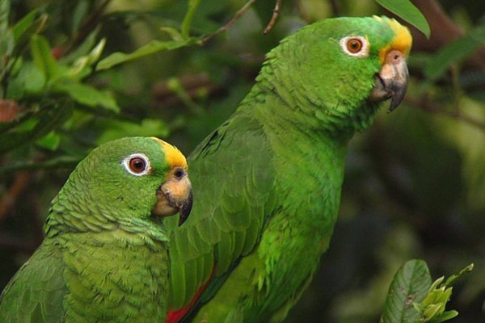

PERICO
Melopsittacus undulatus

Suele verse volando alrededor o alimentándose en ramas expuestas de bosques abiertos,
sabanas, orillas de bosques, parques, y jardines. Como la mayoría de otros pericos,
El Perico Barbinaranja anida en cavidades hechas por otros o construye su propia cavidad en un sustrato blando.
Pico grueso en forma de gancho, cola larga, garras largas.
Plumaje general coloreado; cabeza amarilla, garganta amarilla, pico verde oliva (con cere azul en el macho), partes superiores marrones barradas con amarillo y negro, partes inferiores verdes, rabadilla verde, cola verde azulada
Chirridos que suenan como una charla melodiosa
son capaces de imitar el lenguaje humano y hablar algunas palabras.
Vuelo rápido y directo.
PAGINA PRINCIPAL